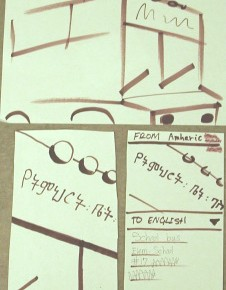

Figure 1. Easy Scenario Storyboard
Project sites:
http://www.cs.washington.edu/education/courses/cse490f/07wi/project_files/camera/
http://panlingual.org/ (hosted by Utilika Foundation)
Report URLs:
http://www.cs.washington.edu/education/courses/cse490f/07wi/project_files/camera/devpilot/rev.html
http://panlex.org/pubs/etc/pancam.html
You're a Vinkalkan, on a trip to Hattania. You use your intuitions, school-studied foreign languages, and gestures to communicate with people around you. But at times the language barrier is a frustrating problem. You want to read a street sign, but can't. At a bus stop you wish you could make sense of the posted schedule. You've stumbled across a quaint village restaurant, but its menu looks like gibberish. You wonder what a screaming newspaper headline is reporting. You come across a gathering with placards but wish you knew what the crowd is protesting.
Your growing physical mobility, arising from progress in technical, commercial, and political globalization, brings you face to face with pieces of text in various languages that you cannot understand.
The same progress in mobility that makes the problem increasingly frequent can also contribute to its solution.
Wherever you go, you carry a mobile telephone with a built-in camera. With this device, you could photograph texts you want to understand, or use existing photographs, existing texts, or direct input (via typing, handwriting, or speech), and then get the texts translated. On the basis of your location, the input contents, and your history and preferences, the system could determine the source and target languages.
Our project aims to design the user interface for an application that would add this functionality to mobile camera phones. The application, PanCam (Panlingual Camera Phone), would leverage four sources of intelligence: the device, a server network, the user, and a human-computation network. This human-machine solution strategy is appropriate for image-based text recognition, language identification, and translation from any language into any language, all of which are too error-prone to justify exclusive reliance on fully automatic solutions. In this collaborative solution strategy, and in its definition of the problem as panlingual rather than only bilingual or plurilingual translation, the PanCam project distinguishes itself from related efforts of which we are aware (Pool, 2006).
We have decided to keep in mind a group of realistic, diverse, and unequally difficult representative tasks. We evaluate our design and each of our prototypes against these tasks. They are also the tasks we have asked test users to perform with our prototypes. From time to time, we have amended the task definitions slightly to accommodate changing prototype functionalities. As of March 2007, the tasks are defined as follows:
Easy task: "Understanding something around you": While in an unfamiliar place, you see some written and printed texts around you in a language you cannot read. Get a translation of one of these texts into English.
Task of moderate difficulty: "Making yourself understood": You have met somebody with whom you have shared interests but no shared language. The person knows Hattanese, but you do not. You have something to say to the person. Write it in English, get it translated into Hattanese, and show the translation to the person.
Difficult task: "Understanding a scene you saw earlier": You have made several photographs of scenes around you while visiting unfamiliar places. Later on your trip, you want to understand better the scenes that you saw. Choose one of the photographs in your collection and get a translation of the text in that photograph into English. If you can, check whether the text in the photograph was correctly read. If you see obvious errors, correct them before the translation proceeds.
While the above tasks are largely design- and device-independent, we have also specified, at each stage of the project, "scenarios" (Lewis and Rieman, 1994, ch. 2) detailing how we expect a user can perform the tasks with the existing prototype. As of March 2007, the scenarios, based on the prototype implemented on the Cingular 8125 mobile telephone, are described below. The action "tap" refers to touching an item on the touch-sensitive display, while "press" refers to pressing a hardware button.
Easy task: "Understanding something around you" (Figure 1).
Figure 1. Easy Scenario Storyboard
Task of moderate difficulty: "Making yourself understood" (Figure 2).

Figure 2. Moderately Difficult Scenario Storyboard
Difficult task: "Understanding a scene you saw earlier" (Figure 3).

Figure 3. Difficult Scenario Storyboard
The brief history of the Panlingual Camera Phone project teaches two main lessons:
From our experience with several methods of evaluation, our general conclusion is that the differences among methods are not very significant, because any method, implemented with care, tends to uncover the major issues with a design. But when evaluation is conducted seems to make a great difference. Evaluation seems to do the most good when it takes place early (starting before any design or prototyping) and often. And, since evaluation methods seem relatively interchangeable, it is rational to use rapid and inexpensive methods. Prototypes need not be elaborate, and evaluators need not be more than about five persons.
The pre-design task analysis, contextual analysis with four interviews, and experience sampling with two subjects, provided evidence that users would want:
Subsequent user testing revealed some other demands, including for text input, but the initial findings have motivated all subsequent design and some of them remain to be addressed in future work.
The first user study, with a low-fidelity paper prototype and four subjects, revealed significant usability issues, including:
The heuristic evaluation of the medium-fidelity interactive prototype, by four user-interface design students, revealed additional important issues, including:
These initial small-sample evaluations revealed almost all the issues so far. The next user evaluation, based on a further-revised medium-fidelity interactive prototype, had a 24-person sample of subjects, four to six times as large as any prior sample, but revealed no new issues. The last evaluation, of the device-based prototype, had a five-person sample and revealed some device-specific issues, plus one fundamental issue that had escaped prior discovery. This was the problem of mode-switching. Prior prototypes had not offered any input modes except camera image capture. The device-based prototype offered the option to enter text input directly. This change made it possible for a user to try switching from one mode to another while input was in progress. This attempt made us aware that such switches could be useful and we had not provided for them.
The interface design has changed at each stage in its development, mainly for two reasons:
Moving from the paper prototype to the medium-fidelity interactive prototype, we added metadata access and text zooming to the features, because task analysis and evaluation had revealed a need for these and they were more practically implementable in an interactive prototype.
As we iterated through successive versions of the medium-fidelity prototype, we added help buttons, made the review of the entire recognized text possible, permitted the user to correct the source-language identification, made hints more visible, and provided a zoom-cancel option. These had been identified as wanted features in evaluations.
The device-based environment substantially changed the design constraints. Its implementation difficulties caused us to abandon two features that we had already built in: lexical zoom and metadata access. Conversely, its implementation possibilities permitted us to add features whose value we had already understood, but which could not realistically be realized before: the ability of the user not only to review, but also to edit, recognized text from an image; the ability to select an existing stored image for input rather than taking a new photograph; and the ability to provide input by direct text entry on a device keyboard.
The prototypes' evolving responses to the problem of source text quality is illustrative. Even before prototyping began, our task and user studies made it clear that this problem would be critical. A large fraction of the photographs made by subjects in the experience-sampling study contained difficult-to-recognize text, as Figure 4 exemplifies. Although we knew this would be a problem, we postponed working on it when we implemented a paper prototype. There we pretended that the system could identify the source language infallibly and deliver a translation without exposing the text recognition to the user for correction, as shown in Figure 5. Our interactive medium-fidelity prototypes made slight moves toward addressing the problem, by permitting the user to correct the source-language identification and inspect the text recognition of individual words, while still not permitting any corrections of the recognized text, as Figure 6 shows. The device-based prototype made text editing more practical, and here we incorporated a more realistic approach to the problem of source text quality, permitting the user to inspect the entire recognition output for an image and to edit it freely before translation takes place, as in Figure 7.
Figure 4. ESM Photo |
 Figure 5. Paper-prototype translation |
Figure 6. Medium-fidelity translation |
Figure 7. Device-prototype text recognition |
Once we moved our design environment to an actual mobile telephone, we amended our design to incorporate wanted features that could now realistically be implemented. Some of these features have been implemented, and some remain to be addressed in future work. In this section we describe our final design, with "final" defined to mean "as of the end of the development period from October 2007 to March 2007".
The interface is intended to permit its user to capture or formulate an expression in any language and obtain a translation of it into any other language. The user may capture the expression by providing a text document, a speech recording, or a recorded image that contains text, or by taking a photograph of text. The user may formulate the expression by typing text, handwriting text, or speaking.
We have designed the interface to realize this functionality as follows:
The user supplies the text source by selecting a source type from buttons on the launch page (Figure 8) and then providing a source of that type by means of the features of the mobile camera phone on which the application is installed.

Figure 8. Launch Page
If the source is an image, the user may limit the text range that is to be translated by tapping a zoom button and marking the text to be included.
If the source is an image or speech, the system provides a conversion of the source to editable text for inspection and correction by the user in a text area with an on-screen or hardware keyboard (Figure 9).
Figure 9. Recognized Text Correction
The user has access to, and may correct, the system's identification of the source language with an editable dropdown list.
The user has access to, and may change, the system's identification of the desired target language with an editable dropdown list (Figure 10).

Figure 10. Target Language Modification
The user may obtain metadata on any word in the source or target expression by touching the word. This will cause the word to be visibly connected to its counterpart word or phrase.
The user may obtain a translation of the text (with any corrections made) into the specified target language by tapping a translate button (Figure 11).

Figure 11. Before and After Text Translation
The user may save any existing unsaved image and text and supply a new source by tapping a new-photo button if the new source is a camera photograph, or by tapping an exit button and reselecting a source type from the launch-page menu.
The user may exit the application by tapping an exit button on the launch page.
The user may see page-specific help by tapping a help button on any page.
The user may see control-specific help by pressing and holding any control.
Some of the above functionalities have not yet been implemented. The reasons are:
The as yet unimplemented features are:
Our design effort has been concentrated on the user interface, not on the entire system. In the case of PanCam, the provision of the services (language identification, text recognition, and translation) requested by a user is a complex problem. In order to permit realistic testing of the interface prototype, we have simulated or simplified some functionalities of the system:
The tools used in the development of this version of the prototype were:
The device permitted us to implement some features of our design more realistically than previously used prototyping tools had. The development environment allowed us to place high-fidelity controls into the prototype with minimal coding effort.
However, the programming environment made development difficult in some ways. The poverty of the training and reference documentation forced us to spend substantial time researching, guessing, and trying solutions. The emulator responded slowly. It also did not, or did not easily, emulate all features of the device, including the functionalities of on-screen action buttons, taking a photograph, and communicating with a server. Thus, it was difficult for multiple collaborators to contribute to the development effort when only two copies of the actual device were available. The development environment was also unfamiliar to most members of the team and required the use of an operating system that was not readily available to all of them.
Clayton Lewis and John Rieman, Task-Centered User Interface Design: A Practical Introduction (http://hcibib.org/tcuid, 1994).
Jonathan Pool, "The Panlingual Mobile Camera" (http://panlex.org/pubs/etc/pancam/idea and https://www.cs.washington.edu/education/courses/490f/07wi/project_files/camera/idea, 2006).